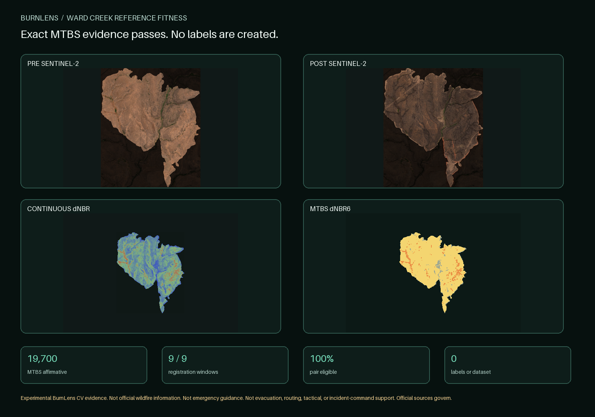

P2O4-T39-U03 / EXACT SOURCE FITNESS
Ward Creek MTBS evidence passes.
The exact delivery, embedded notices, native products, boundary, and optical registration pass. This checkpoint creates no candidate or label.
19,700
MTBS affirmative pixel centers9 / 9
registration windows pass100%
optical pair eligible0
labels, datasets, or models
What this proves
- The exact delivery, embedded notices, safe archive, identities, valid boundary, native rasters, grids, nodata, and class domain passed deterministic inspection.
- The exact Sentinel pair is fully eligible and passes all nine local registration windows on the delivered boundary.
- MTBS classes 2-3 cover 19,700 verified optical-grid pixel centers as bounded candidate evidence.
What this does not prove
- MTBS is not independent ground truth, affirmative background truth, BurnLens field validation, or an operational label.
- No candidate, owner decision, label, dataset, split, baseline, model, metric, accuracy, official status, endorsement, operational readiness, or emergency suitability is created.
Binding limitations
Data may be updated; represented locations may be inaccurate; no warranty or fitness is supplied.
MTBS classes 2-4 may support a later burned-candidate proposal. No class is affirmative background truth.
BL-2026-07-24-ward-creek-reference-fitness-r002b5272bc28275b100fa142fee46fec5a2c97576f9